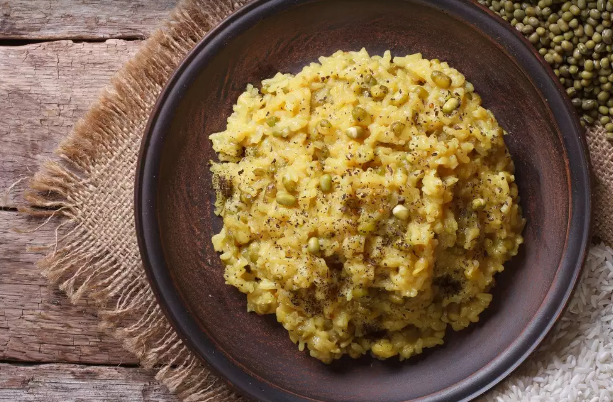

Khichdi : A North Indian Delight
The term Khichdi comes from the Sanskrit word ‘Khiccha’, meaning a dish of rice and legumes. Largely, Khichdi is made from rice and lentils, but there are some other regional variations like Bajra Khichdi and Moong Khichdi. In Hindu culture, it is one of the first solid foods that babies eat. Also, Khichdi is believed to be the inspiration behind the Anglo Indian dish ‘Kedgeree’, a dish consisting of cooked, flaked fish (traditionally smoked haddock), boiled rice, parsley, hard-boiled eggs, curry powder, butter or cream, and occasionally sultanas.
The earliest reference to Khichdi could be found in the Indian epic ‘Mahabharata’, the events pertaining to which are believed to have taken place between 9th and 8th centuries BCE. In the ‘Mahabharata’, Draupadi is said to have fed Khichdi to the Pandavas during their exile. Also, it was a grain of rice from it eaten by Lord Krishna that made a hungry and furious Rishi Durvasha lose his appetite when he and his disciples dropped in suddenly for lunch. Khichdi is also mentioned in Sudama’s story. Sudama, Lord Krishna’s friend went to meet him to Dwarka from Vrindavan and carried two ‘potlis’ (bundles), one containing Khichdi and the other roasted gram. The potli that contained Khichdi was snatched from a tree by a monkey. However, he was able to take a part of the other one to Dwarka where Krishna ate some of the gram and bestowed blessings on his friend.